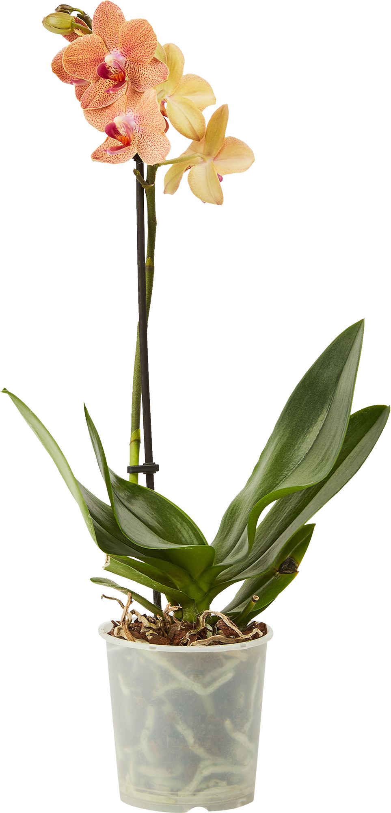

Орхидея фаленопсис
Орхидея фаленопсис, с её изысканными цветами и изящными листьями, воплощает в себе элегантность и
красоту природы. Фаленопсис, также известная как "Бабочка-орхидея" или "Орхидея-фаленопсис", принадлежит к одному из
самых популярных видов среди комнатных орхидей.